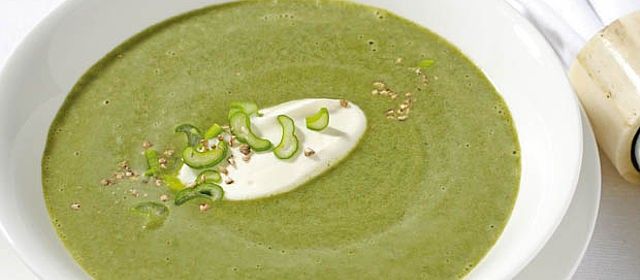

Bärlauchsuppe
Autor: Wildeisen
Zutaten
- 150 g Bärlauch
- 2 Stück Frühlingszwiebeln
- 250 g Kartoffeln, mehligkochend
- 2 Esslöffel Butter
- 0.5 dl Weisswein, oder Noilly Prat
- 7 dl Gemüsebouillon
- 1.5 dl Rahm
- Salz, Pfeffer, aus der Mühle
- 1 Prise Muskat
Zubereitung
Für 4–6 Personen
- Den Bärlauch waschen, auf einem sauberen Küchentuch ausbreiten und trockentupfen, dann die Stiele entfernen. Die Blätter in Streifen schneiden. Die Frühlingszwiebeln rüsten und mitsamt schönem Grün hacken. Die Kartoffeln schälen und klein würfeln.
- In einer mittleren Pfanne die Butter erhitzen. Frühlingszwiebeln und Bärlauch darin andünsten. Mit dem Noilly Prat oder Weisswein ablöschen, die Bouillon dazugießen und die Kartoffelwürfel beifügen. Alles zugedeckt etwa 15 Minuten leise kochen lassen, bis die Kartoffeln weich sind.
- Die Suppe im Mixer oder mit dem Stabmixer fein pürieren. Den Rahm hinzufügen, die Suppe aufkochen und mit Salz, Pfeffer sowie Muskat abschmecken.
